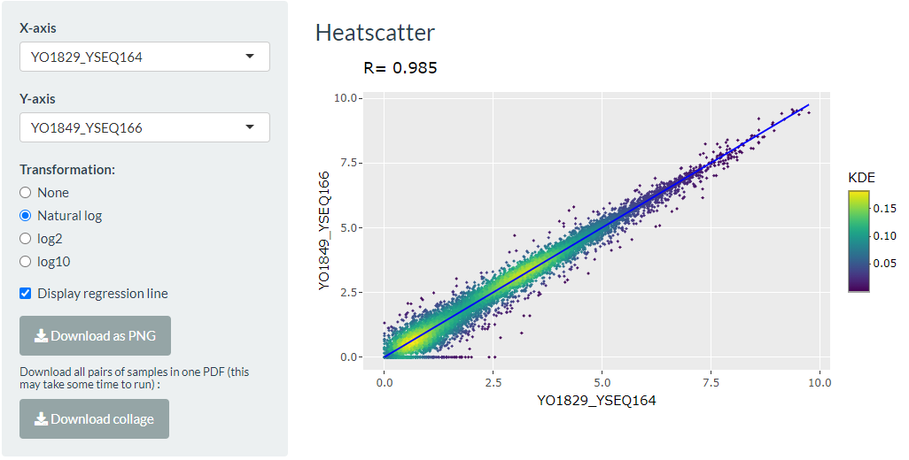
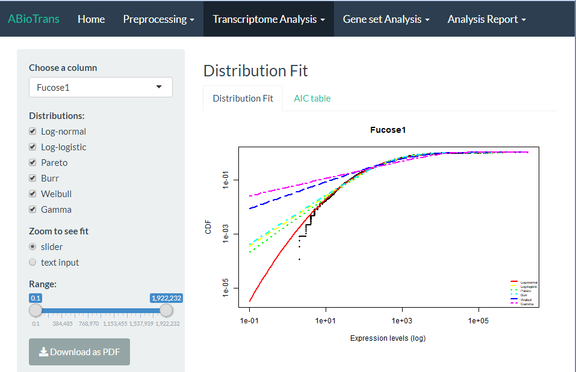
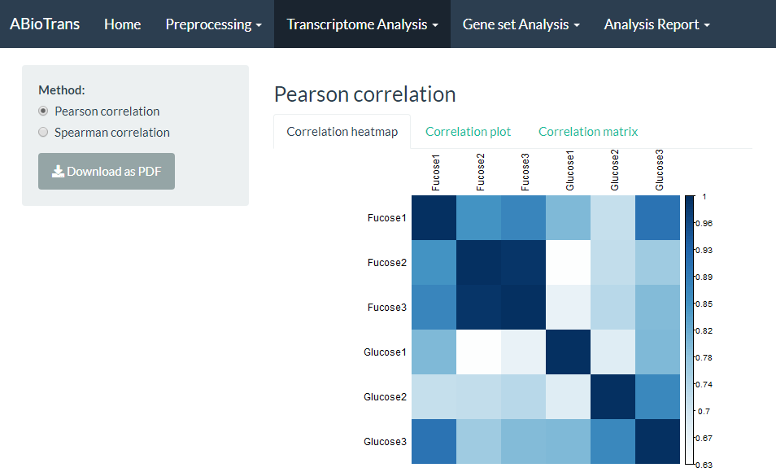
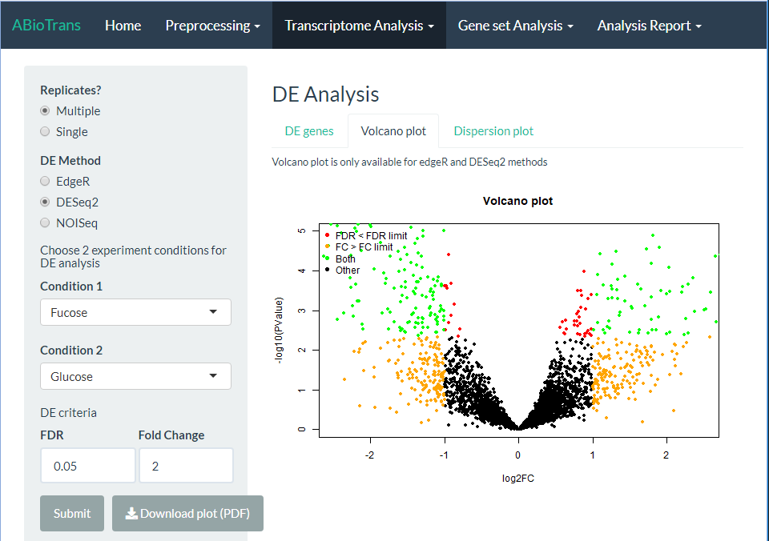
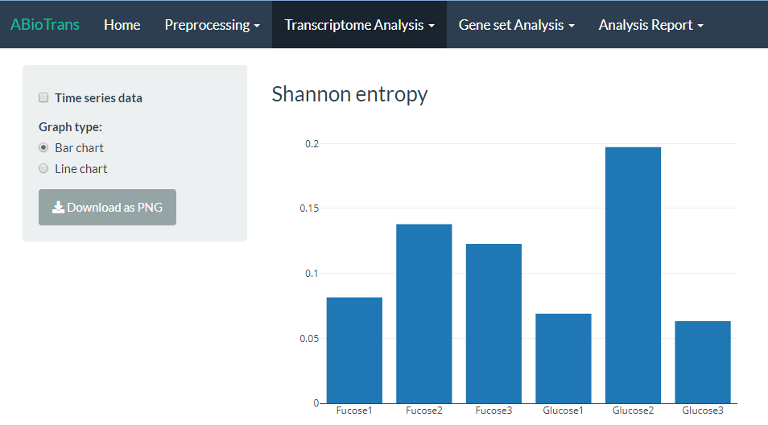
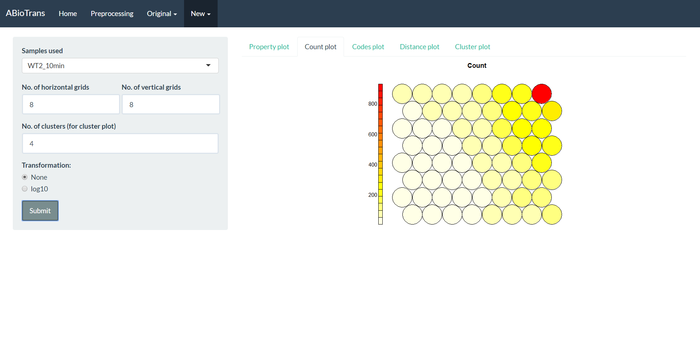

Transcriptome Analysis
Scatter plot
Scatter plot compares any 2 samples (or 2 replicates) by displaying the respective expression of all genes in 2D space. It is recommended to preform normalization for sequencing depth (TPM, RPKM, FPKM) for this step (and so does distribution fitting, correlation, hierarchical clustering, noise and entropy).
As gene expression data is naturally skewed towards very high expression level region, we recommend applying log-transformation to capture the whole data range. User can choose between log base 2, natural log, or log base 10. An option to add linear regression line is also available. Gene expression data is densely distributed in the lowly expressed region, making the dots usually indistinguishable in regular scatter plot.
ABioTransPlus overlay a 2D kernel density estimation on the scatter plot to visualize the density of expression level. The user can choose to download each single scatter plot, or to download all pairs of samples scatter plot in one PDF file, which may take some time to run.

Distribution fitting
Choose the column you want to fit and compare with any combinations of the six statistical distributions. You can adjust the slider or input the range for x-axis to zoom in to see the fitted curve.
Distribution fitting compares the gene expression to a number of statistical continuous distributions, which can be used to validate the data. To visualize the comparison, ABioTransPlus displays the Cumulative Distribution Function of the preprocessed gene expression data with the user-selected theoretical distributions. Once it is confirmed that the gene set follow a distribution, it would be safe conclude the validity of the gene expression data. AIC table is also provided in AIC table tab to show the best fitted distribution in each sample

Pearson and Spearman correlations
The Pearson correlation evaluates the linear relationship between two continuous variables. A relationship is linear when a change in one variable is associated with a proportional change in the other variable.
The Spearman correlation evaluates the monotonic relationship between two continuous or ordinal variables. In a monotonic relationship, the variables tend to change together, but not necessarily at a constant rate. The Spearman correlation coefficient is based on the ranked values for each variable rather than the raw data.
User shall choose a correlation method and view it in either correlation heatmap, correlation plot in circle or correlation matrix.

PCA and K-means clustering
Principal Components Analysis (PCA) is an multivariate statistical technique for simplifying high-dimensional data sets (Basilevsky 1994). Given m observations on n variables, the goal of PCA is to reduce the dimensionality of the data matrix by finding r new variables, where r is less than n. Termed principal components, these r new variables together account for as much of the variance in the original n variables as possible while remaining mutually uncorrelated and orthogonal. Each principal component is a linear combination of the original variables, and so it is often possible to ascribe meaning to what the components represent. A PCA analysis of transcriptomic data consider the genes as variables, creating a set of “principal gene components” that indicate the features of genes that best explain the experimental responses they produce.

Differential Expression Analysis
DE analysis identifies the genes that are statistically different in expression levels between the 2 selected conditions. Two important threshold are:
The lower bound of expression fold change between the 2 selected conditions
The upper bound of hypothesis test p-value
AbioTransPlus implements 3 popular methods to identify DE genes:
For data with single replicate in all experiment condition, NOISeq method can simulate technical replicates to carry out DE test. Metadata file is required for DE Analysis. Please make sure metadata contains all column names from input data file and match them with experimental condition
For edgeR and DESeq2, raw read counts data file must be provided. For NOISeq, gene expression should be normalized for sequencing depths (by select normalization method in Preprocessing tab if raw counts file is inputted, or by directly providing normalized gene expression)
To carry out the analysis, first the user needs to specify DE methods, two conditions to compare (condition 2 is compared against condition 1), fold change cut-off value and False Discovery Rate (FDR or adjusted p-value) threshold, then hit the “Submit” button. By convention, DE genes are filtered at FDR = 0.05 and 2-fold change.
When the computation finishes, table of DE genes, volcano plot of DE result and dispersion plot of input data are displayed in their respective tabs. Please note that volcano plot and dispersion plot are only available for edgeR and DESeq2 methods.

Heatmap of gene expression and Hierarchical clustering
Hierarchical clustering is used to find the groups of co-expressed genes. The clustering is performed on normalized expressions of differentially expressed genes using Ward clustering method.
Heat map of gene expression and hierarchical clustering can be carried out on DE genes resulted from DE analysis tab by selecting DE result. Otherwise, you can specify the minimum fold change and minimum number of samples (columns in input data file) satisfying the fold change. Finally, you need to specify the number of clusters on rows (genes), then hit Submit.
The gene names in each cluster are displayed in the Gene clusters panel, corresponding to the heatmap you just generated.

Transcriptome-wide average noise
Transcriptome-wide average noise is used to quantify between gene expressions scatter of all replicates in one experimental condition. Formula is adapted from Kumar et. al 's paper
- User to select a desired noise plot according to your data. By default the name of the first replicate in each genotype is used as the name of the genotype. You can specify the names of the genotypes, only make sure that all names are different (due to the mapping mechanism of Plotly). Please be reminded that the consecutive columns will be regarded as of the same genotype.
- Noise here refers to the average transcriptome noise — the squared coefficient of variation — defined as the variance (σ2) of expression divided by the square mean expression (μ2).
- If
replicatesis selected, the noise within one genotype will be computed. - If
genotypes (average of replicates)is selected, the gene expression data within one genotype will first be taken average of, and the average value will be used as the expression value of that certain genotype. Then noise will be computed between the anchor genotype and all the other genotypes. - If
genotypes (no replicate)is selected, each sample column is treated as a different genotype. Noise will directly be computed between the anchor genotype and the rest of the genotypes.
Entropy
Shannon entropy (Shannon, 1948) measures the disorder of a high-dimensional system, where higher values indicate increasing disorder. ABioTransPlus adapts the Shannon entropy formula to quantify the variability of one sample of gene expression.
- First specify whether your data is a time series data.
- If the data is not in time series, entropy values of all samples will directly be displayed.
- Otherwise, if it is a time series data, specify the number of time points. For example, if the number of time points is 6, then sample 1 to 6 will be regarded as genotype A time 1 - time 6, sample 7 to 12 will be genotype B time 1- time 6, and so on and so forth. For a line chart, the entropy of each genotype will be shown in one line.

t-distributed stochastic neighbor embedding (t-SNE) (new feature)
t-SNE is a dimensionality-reduction approach that reduces the complexity of highly complex data such as the transcriptomic data. It visualizes the sample interrelations in a 2- or 3-dimensional visualization. This allows the identification of the close similarities between samples through the relative location of mapped points. Since t-SNE is nonlinear and able to control the trade-off between local and global relationships among points, its visualization of the clusters is usually more compelling when compared with the other methods [Cieslak 2020].
ABioTrans Plus introduces an intuitive interface that allows performing t-SNE analysis on the processed untransformed transcriptomic data through entering three inputs perplexity value, the number of principal components (PC) and the number of clusters. The user can also choose to log transform the data before submission.
Clustering with random forest (new feature)
Random forest clustering is an unsupervised learning approach, where each sample is clustered into different classes, based on their similarity (usually based on Euclidean distance).
ABioTrans Plus uses the random forest algorithm to generate a proximity matrix, a rough estimate of the distance between samples based on the proportion of times the samples end up in the same leaf node of the decision tree. The proximity matrix is converted to a dist matrix which is then inputted to the hierarchical clustering algorithm [Chen 2012]
The diff_genes.csv file will be generated after each run, containing names of differential genes.

Self-Organizing Map (SOM) (new feature)
SOM is a dimensionality reduction technique that produces a two-dimensional, discretized representation of the high-dimensional gene expression matrix. It uses a neighbourhood function to preserve the topological properties of the input gene expression matrix. Each data point (e.g. 1 sample) in the input gene expression matrix recognizes itself by competing for representation. SOM mapping steps start from initializing the weight vectors. From there, a sample vector is selected randomly and the map of weight vectors is searched to find which weight best represents that sample. Each weight vector has neighbouring weights that are close to it. The weight that is chosen is rewarded by being able to become more like that randomly selected sample vector. The neighbours of that weight are also rewarded by being able to become more like the chosen sample vector. This allows the map to grow and form different shapes. Most generally, they form square/rectangular/hexagonal/L shapes in 2D feature space [Yin 2020].
ABioTrans Plus provides 5 types of SOM plots:
Property: Uses values of codebook vectors (weight of gene vectors) and output as coloured nodes
Count: Shows how many genes are mapped to each node
Codes: Displays codebook vectors
Distance: Shows how close genes are from each other when they are mapped
Cluster: Uses hierarchical clustering to cluster the SOM
There are 4 parameters to control the SOM plots. Samples used determines the sample chosen for the plots, either all samples or individual ones. No. of horizontal grids and No. of vertical grids changes the number of nodes used in the SOM. No. of clusters classifies the SOM nodes into the specified cluster size (for cluster plot).
